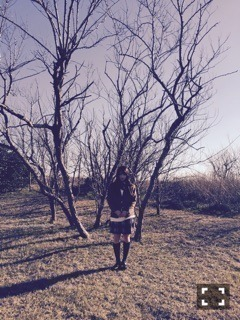
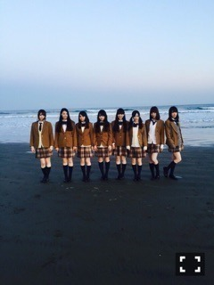

| 2015/03 05 Thu | 年中充血。630回目 |
発売中のヤングジャンプで
表紙の左端でヘッドホンしてる人が
いたらそれは私です。
背骨！！！！
グラビアらしいグラビアは
久しぶりでした。
巻末に載せていただいてます。

そして11thシングル
「命は美しい」MV
特典映像のペアpv予告編公開。
『あわせカガミ』
監督 高橋栄樹さん
生駒里奈&伊藤万理華
双子の鎌倉小旅行
レコーダーを片手に。
個人pvとはまた違う
2人でしか出せない雰囲気が
各pvに出て面白い。
お楽しみに！
乃木のので解禁した
カップリング曲
「あらかじめ語られるロマンス」
生駒生田星野飛鳥未央奈私の
6人ユニット。
他の星から以外のユニットは
初めてだから嬉しいー
ライブで披露するの楽しみ！

そして、明日発売のMdN
70pにわたって乃木坂46の
アートディレクション特集です。
グラフィックデザイン雑誌に
乃木坂をこんなにフィーチャー
してもらえて嬉しいです！
というか私にとっては
とても興味深い...！
もちろん前から
存知上げていた雑誌なので
普通に興奮してます！！
ジャケ写の密着撮影、
MV、個人pv等の
クリエイターさんや今野さん、
メンバーのインタビューが掲載。
タイポグラフィーとか
漫画の表紙デザインとか
アニメーションのデザインとか、
見るのが楽しい。
読んでて関わりたいなあって思う、
少女漫画特集面白かったなあ。
サカナクションさん特集号での
ヌケメさんとカガリユウスケさん
の対談も読んだ！
それつながりだけど、
この前MAN目当てで
中庭という雑誌を買ったら
どちらも載っていました。
買って正解でした。

月刊エンタメで
飛鳥と対談してます。
飛鳥とはこうやって対談する
機会が多い！
今回も読んでほしいです。
3月9日 BOMB!
美彩とペアグラビア
3月12日 CUTiE
また載せていただきます。
連載が始まります。
3月14日 EX大衆
MVについて、奈々未と対談
3月19日 OVERTURE
特集組んでいただきました！
3月23日 UTB
19歳記念？グラビア
他にもこんなにたくさん。
詳細は後ほど...
楽しみにしててね〜
......
もうひとつお知らせです。
作家鈴木光司さんの
小説『アイズ』が映画化されます。
主演を務めることになりました。
めざましテレビでニュースに
なったみたいで驚いてます、、
日刊スポーツに掲載されてます。
正直、最初は主演という実感がなくて
まったく意識せずやっていました。
でも今日こうやって
大きく発表されてやっと
主演なのか...と自覚しました。
自分がホラー映画という王道を
経験できるとは思いませんでした。
この機会を通して、
私を知ってもらえたら
新しい私を見てもらえたら
嬉しいです。
どうか温かく見守っていてください。

よろしくお願いします ！！
まりか
コメント(870)
2015/03/05 20:06